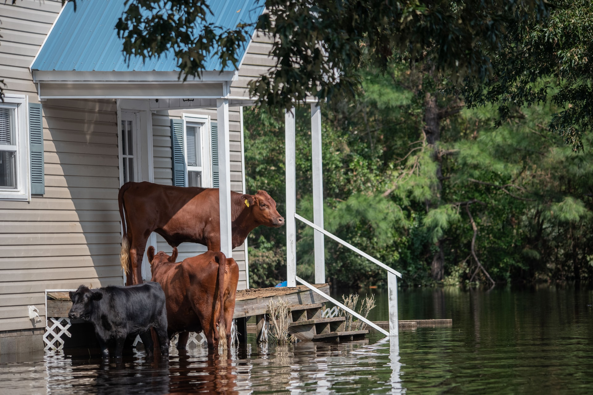
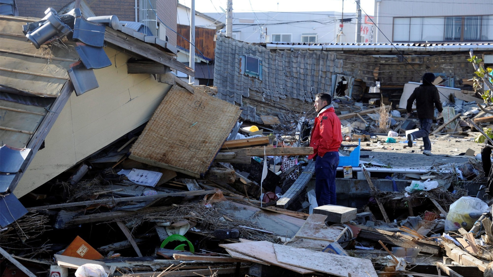
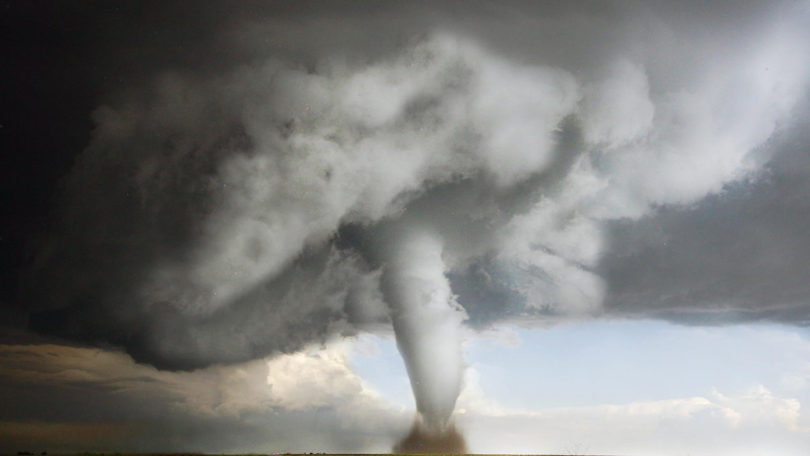

Akibat dari Revolusi Bumi
- Terjadinya gerak semu matahari
Gerak semu matahari merupakan posisi matahari yang berubah- ubah karena posisinya yang berganti.
Gerak semu matahari juga disebut sebagai gerak semu tahunan matahari.
Sebenarnya, gerak semu tahunan matahari merupakan pergeseran posisi matahari ke arah belahan bumi utara yang umumnya terjadi pada tanggal 22 Desember hingga 21 Juni.
Serta dari belahan bumi utara menuju ke belahan bumi selatan, yang terjadi pada tanggal 21 Juni hingga 21 Desember.
Peristiwa ini dinamakan sebagai gerak semu matahari, karena sebenarnya yang bergerak bukan lah matahari, melainkan Bumi yang melakukan revolusi dengan sumbu rotasi yang miring
- Terjadinya perbedaan waktu siang dan malam
- Antara 21 Maret - 23 September
- Kutub Utara berada di dekat matahari, sedangkan Kutub Selatan jauh dari matahari.
- Belahan bumi utara terpapar sinar matahari lebih lama dibandingkan dengan belahan bumi selatan.
- Matahari bergeser ke arah utara bumi.
- Jarak terdekat Kutub Utara dan matahari terjadi pada tanggal 21 Juni.
Di tanggal tersebut, pengamat di khatulistiwa melihat matahari bergeser 23,5o ke arah utara.
- Beberapa daerah dekat Kutub Utara mengalami siang selama 24 jam.
Sementara itu, beberapa daerah dekat Kutub Selatan mengalami malam selama 24 jam.
- Antara 23 September - 21 Maret
- Kutub Utara berada di dekat matahari, sedangkan Kutub Selatan jauh dari matahari.
- Belahan bumi selatan mendapatkan sinar matahari lebih lama dibandingkan dengan belahan bumi utara.
- Belahan bumi selatan mengalami siang yang lebih lama dibandingkan dengan belahan bumi utara.
- Matahari bergeser ke arah selatan bumi.
- Beberapa daerah dekat Kutub Utara mengalami waktu malam 24 jam,
sementara beberapa daerah dekat Kutub Selatan mengalami siang selama 24 jam.
- Pada tanggal 22 September, kutub selatan berada di posisi paling dekat dengan matahari.
Pada tanggal tersebut, pengamat di khatulistiwa melihat matahari bergeser 23,5° ke arah selatan.
- Antara 21 Maret - 23 Desember
- Jarak matahari di Kutub Utara dengan Kutub Selatan adalah sama.
- Belahan bumi utara dan belahan bumi selatan menerima sinar matahari sama banyaknya.
- Seluruh permukaan bumi mengalami waktu siang dan malam sama lamanya.
- Matahari terlihat melintas tepat di atas kepala di daerah khatulistiwa.
- Terjadinya perubahan musim di bumi
- Musim-musim di belahan bumi utara
- Musim semi : 21 Maret – 21 Juni
- Musim panas : 21 Juni – 23 September
- Musim gugur : 23 September – 22 Desember
- Musim Dingin : 22 Desember – 21 Maret
- Musim-musim di belahan bumi selatan
- Musim semi : 23 September – 22 Desember
- Musim panas : 22 Desember – 21 Maret
- Musim gugur : 21 Maret – 22 Juni
- Musim Dingin : 21 Juni – 23 September
- Perubahan rasi bintang
Rasi bintang sering diambil dengan garis hidup seseorang.
Ilmu yang mengamati disebut astrologi.
Terdapat sebagian manusia yang masih percaya dengan astrologi,
akan tetapi sebagian orang tidak mempercayai astrologi karena berbeda pendapat dengan ilmu agama.
Perbandingan bentuk rasi bintang kenyataannya karena lokasi kita sebagai peneliti di Bumi.
Sehingga saat bumi mendapati pergerakan lokasi, maka kenyataannya rasi bintang juga akan berbeda.
- Ditetapkannya Kalender Masehi
Revolusi bumi akan berpengaruh pada penetapan kalender masehi.
Berdasar pada pembagian bujur, yakni bujur barat dan bujur timur maka ditetapkan bahwa batas penanggalan internasional adalah bujur 180 derajat
Hal ini berakibat bahwa apabila di belahan timur bujur 180 derajat tanggal 10 maka di belahan barat bujur 180 derajat masing tanggal 9, seperti meloncat satu hari.
perhitungan kalender masehi mengacu pada periode revolusi bumi yang mana satu tahun sama dengan 362, 25 hari
Manfaat dari Revolusi Bumi
- Kita dapat merasakan pergantian musim
Masing- masing musim mempunyai kekhasan tersendiri yang pastinya akan mempengaruhi keadaan lingkungan.
Misalnya saja musim panas. Ketika musim panas kita akan merasakan sinar matahari begitu terik dan suhu akan terasa sangat panas.
Kemudian ketika musim gugur tiba kita akan menjumpai banyak pohon- pohon yang menggugurkan daunnya sehingga lingkungan tampak berwarna kuning kecoklatan.
Ketika musim dingin tiba, kita akan merasakan udara yang dingin menusuk tulang dan kita lihat salju turun dimana- mana.
Selain itu ketika musim semi, kita akan menjumpai pohon- pohon mulai bersemi dan bunga- bunga bermekaran. Udara juga mulai hangat.
- Kita bisa melihat berbagai macam bentuk rasi bintang
Dengan adanya rasi bintang yang berbeda- beda ini maka timbullah yang namanya zodiak.
Zodiak dipercaya dapat digunakan untuk menentukan nasib seseorang berdasarkan tanggal lahirnya.
Dengan demikian mereka bisa lebih waspada atau mengetahui tentang persoalan yang akan dia hadapi.
Terlepas hal ini benar atau tidak, namun astrologi (ilmu yang mempelajari mengenai peramalan nasib berdasarkan rasi bintang) ini dapat dijadikan hiburan, dan bahkan sebagai sumber mata pencaharian bagi para peramal.
- Kita mempunyai satuan waktu yang pasti
Manfaat yang sangat besar yang kita rasakan dari adanya revolusi bumi adalah yang berkaitan dengan waktu atau penanggalan
Hingga era sekarang ini, kita menggunakan penanggalan yang disebut penanggalan Masehi.Penanggalan Masehi ini didasarkan pada revolusi bumi terhadap matahari.
Satuan terbesar dalam penanggalan ini adalah tahun. Satu tahun masehi periodenya adalah satu kali revolusi Bumi, yakni sekitar 365 hari.
dengan adanya tahun ini, kita juga mengenal bulan dan tanggal sebagai satuan waktu yang lebih kecil. Sehingga untuk memecahkan problematika waktu sudah dapat dicapai.
Fenomena Alam yg Terbentuk dari Revolusi Bumi
Contoh Peristiwa Alam yang Membahayakan

Banjir

Gunung Meletus

Gempa Bumi

Angin Topan
- Banjir
- Gunung Meletus
- Gempa Bumi
- Angin Topan
- Tanah Longsor
Contoh Peristiwa Alam yang tidak Membahayakan
- Terbentuknya Embun
- Munculnya Pelangi